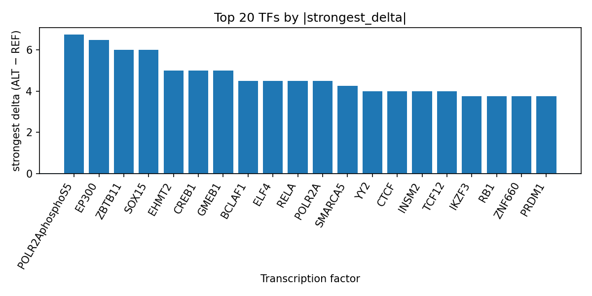

Author: snv-tf-researcher
Background: B-cell acute lymphoblastic leukemia (B-ALL) is a hematologic malignancy for which germline and regulatory genetic variation has been investigated through GWAS and related analyses [1-4]. Here, we evaluated the intergenic GWAS variant rs189434316 on chromosome 14 using AlphaGenome transcription factor (TF) ChIP-seq prediction outputs, which are computational predictions and not experimental measurements.
Methods: The variant rs189434316 (A>G; risk allele rs189434316-T) was selected by effect size from the provided run data. We summarized predicted TF ChIP-seq delta scores across tracks, checked the provided consequence annotation, and integrated PubMed-indexed literature provided with the run. AlphaGenome predictions were interpreted as in silico prioritization only, and experimental validation is required.
Results: rs189434316 was annotated as an intergenic variant. Predicted TF effects were broadly positive, with the largest aggregate prioritization for POLR2AphosphoS5, EP300, ZBTB11, SOX15, EHMT2, CREB1, GMEB1, BCLAF1, ELF4, RELA, and POLR2A among the top ranked factors. The run-level TF summary is also reflected in the provided top_tf_effects.tsv table, and the ranked effect profile is visualized in the supplied figure set (Figure 2).
Conclusions: Computational predictions for rs189434316 suggest altered TF binding potential at a noncoding locus in B-ALL, prioritizing several transcriptional regulators for follow-up. Because the variant was selected by effect size and may be in linkage disequilibrium with the true causal variant, and because AlphaGenome predictions require experimental confirmation, these results should be treated as hypothesis-generating rather than definitive.
B-cell acute lymphoblastic leukemia (B-ALL) is the most common pediatric hematologic malignancy, and multiple recent studies continue to refine its genetic stratification, prognosis, and molecular subtypes [1-4]. GWAS and related genetic analyses have identified susceptibility loci for B-ALL, including loci with ancestry-specific effects and pleiotropic overlap with immune-mediated traits [2,3,5,6]. Additional studies have reported associations between germline variants and B-ALL biology, including regulatory and splicing-related signals [4,7]. Together, these studies support the use of noncoding variant prioritization as a strategy for generating mechanistic hypotheses in B-ALL [2-7].
In this manuscript, we examine rs189434316, an intergenic GWAS variant on chromosome 14 associated with B-ALL. We used AlphaGenome TF ChIP-seq predictions to assess whether the reference-to-alternate substitution may alter predicted TF binding across available tracks. These outputs are computational predictions and not direct measurements of chromatin occupancy; therefore, they are best interpreted as prioritization evidence that requires experimental follow-up.
The provided run data identified rs189434316 (chromosome 14:92231568 A>G; reported risk allele rs189434316-T) as the candidate variant for B-ALL, selected by effect size. The variant consequence annotation supplied in the run was intergenic_variant. No nearest genes were provided.
We summarized AlphaGenome TF ChIP-seq prediction outputs using the run-provided tf_summary_top table and referenced the accompanying run table top_tf_effects.tsv as the source of ranked TF effects. For each TF, we recorded the number of tracks, strongest track identifier, strongest biosample, strongest delta, maximum absolute delta, mean delta, median delta, and the counts of promoted and inhibited tracks. Because these are computational predictions, they were interpreted as potential TF binding changes rather than experimental evidence of occupancy. Experimental validation is required to confirm any predicted regulatory effect.
The workflow for variant selection, annotation, AlphaGenome prediction, literature retrieval, and manuscript synthesis is summarized in the provided pipeline figure (Figure 1).
Figure 1. End-to-end workflow for prioritizing a GWAS SNV with AlphaGenome TF ChIP-seq predictions. The pipeline shows disease and association retrieval, effect-size-based variant selection, consequence annotation, predicted TF binding summarization, literature lookup, and manuscript generation.
The candidate variant rs189434316 is an intergenic SNV on chromosome 14 and was selected on the basis of effect size. The predicted TF binding profile was dominated by positive deltas across many tracks, suggesting broad promotion of binding in the computational model rather than a single isolated effect.
The largest predicted effect was observed for POLR2AphosphoS5, with a strongest delta of 6.75 in upper lobe of left lung tracks. EP300 followed with a strongest delta of 6.5 in transverse colon. ZBTB11, SOX15, EHMT2, CREB1, GMEB1, BCLAF1, ELF4, RELA, POLR2A, SMARCA5, TCF12, INSM2, CTCF, YY2, IKZF3, RB1, ZNF660, PRDM1, DACH1, MLLT1, MCM5, ZNF391, BCL11B, TOE1, TFCP2, ZNF24, NCOA3, and ZFP69B were also among the top summarized TFs with positive predicted effects. These run-level results are organized in top_tf_effects.tsv, which provides the ranked output corresponding to this manuscript.
The distribution of the strongest TF-level deltas is visualized in the provided bar plot, which highlights the predominance of positive predicted changes and the relative ranking of the top TFs at rs189434316 (Figure 2).

Figure 2. Top transcription factors predicted to change at rs189434316 by AlphaGenome TF ChIP-seq tracks. Bars represent the strongest signed delta per transcription factor, with positive values indicating predicted promotion and negative values indicating predicted inhibition across available tracks.
The computational pattern observed at rs189434316 suggests that this noncoding B-ALL-associated locus may alter predicted accessibility or recruitment of multiple transcriptional regulators. The prominence of POLR2A and POLR2AphosphoS5 is notable because these factors are central components of transcriptional machinery, while EP300, CTCF, and SMARCA5 are commonly used markers or regulators in chromatin-focused datasets; however, in this analysis these roles are interpreted only as a prioritization signal from the prediction model, not as measured biology. The broad set of positive predicted deltas indicates that the variant may merit follow-up in relevant hematopoietic contexts.
The literature provided with this run places the result in a broader B-ALL genetics context. Prior GWAS and cross-trait analyses have identified susceptibility loci, tissue enrichments, and shared immune-linked architecture relevant to B-ALL [2,3]. Additional reports have noted subtype-linked germline associations and risk-stratification relevance of molecular findings in pediatric B-ALL [4,6,7]. Although these studies do not specifically address rs189434316, they support the general concept that noncoding variation can contribute to B-ALL risk architecture and motivate regulatory annotation approaches [2-7].
More generally, recent B-ALL studies have emphasized the clinical importance of molecular subtype, relapse prediction, minimal residual disease, and treatment response heterogeneity [1-4,6]. In that setting, computational prioritization of a noncoding variant such as rs189434316 may help nominate candidate regulatory mechanisms for further experimental testing. However, AlphaGenome provides computational predictions rather than measurements, and validation in appropriate assays is required before any biological interpretation can be accepted.
This analysis has several limitations. First, rs189434316 was selected by effect size and may be in linkage disequilibrium with the true causal variant, so the observed predictions may not reflect the direct functional allele. Second, the AlphaGenome TF ChIP-seq outputs are computational predictions and are not experimental measurements of TF occupancy or gene regulation. Third, the provided data do not include nearest genes, tissue context, or functional assays that would allow assignment of a specific target gene or mechanism. Fourth, the literature supplied here includes B-ALL and related lymphoma studies, but no paper directly evaluates rs189434316, so the manuscript should be interpreted as hypothesis-generating only. Experimental validation is required.
Im C, Raduski AR, Mills LJ, et al. Genome-wide association study of childhood B-cell acute lymphoblastic leukemia reveals novel African ancestry-specific susceptibility loci. Nat Commun. 2025;16(1):8974. PMID: 41125582. doi:10.1038/s41467-025-64337-7
Yu X, Chen Y, Chen J, et al. Shared genetic architecture between autoimmune disorders and B-cell acute lymphoblastic leukemia: insights from large-scale genome-wide cross-trait analysis. BMC Med. 2024;22(1):161. PMID: 38616254. doi:10.1186/s12916-024-03385-0
Cao R, Li C, Cui E, et al. A Pseudotime-Dependent TWAS Framework Identifies Disease Genes along Cell Developmental Paths. medRxiv. 2025. PMID: 41282726. doi:10.1101/2025.10.28.25338929
Miyamoto S, Urayama KY, Arakawa Y, et al. Rare TCF3 variants associated with pediatric B cell acute lymphoblastic leukemia. Pediatr Hematol Oncol. 2024;41(1):81-87. PMID: 37129918. doi:10.1080/08880018.2023.2201302
Zhou D, Gouveia MH, Gorman BR, et al. A genome-wide association study identifies an African-specific locus on chromosome 21q22.12 associated with Burkitt lymphoma risk and survival. Leukemia. 2025;39(9):2196-2206. PMID: 40646133. doi:10.1038/s41375-025-02690-8
Chalise JP, Hu Z, Li M, et al. Identification of an alternative short ARID5B isoform associated with B-ALL survival. Biochem Biophys Res Commun. 2024;703:149659. PMID: 38382358. doi:10.1016/j.bbrc.2024.149659
Kermani M, Maxeiner S, Alt F, et al. Dual-trigger model of CD20 escape: NONO regulation and cryptic splicing induced by transcript overload in pediatric B-ALL. Front Immunol. 2026;17:1763413. PMID: 41993182. doi:10.3389/fimmu.2026.1763413